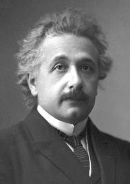

The Life of the Mind
An Introvert Manifesto
“One of the strongest motives that leads men to art and science is escape from everyday life with its painful crudity and hopeless dreariness. Such men make this cosmos and its construction the pivot of their emotional life, in order to find the peace and security which they cannot find in the narrow whirlpool of personal experience.” —Albert Einstein
 |
Famoust Geek |
The back-slapping, glad-handing American extrovert, a product of the dysfunctional U.S. educational system who wallows in slob culture, escapism and vicarious identification with showbiz celebrities, informs us that introverts (or geeks) have no life.
But wait! The reputation of the geek has undergone a radical rehabilitation in recent years. Back in the 1950s, when David Riesman wrote his book, The Lonely Crowd, he expressed his misgivings about America's lopsided personality profile. He observed that in earlier times, such as the pioneering and homesteading eras, and later during the industrial revolution, Americans were quiet and reserved 'inner-directed' individualists, and the 'lone wolf' was celebrated a romantic figure. America's unprecedented burst of productivity after the Civil War brought the Gilded Age and the consumer economy with its legions of aggressive salesmen and ad-men; and it became important for people to be gregarious and affable, or 'outer-directed.'
This powerful cultural bias for extrovert life was expressed in a lethal taboo: unsociability. 'No people skills,' was the common verdict for the socially clueless. Anyone deviating from extrovert values was labeled an unsociable oddball or a pathologically shy loner, a tortured recluse or a sociopathic creep. Newspaper accounts of America's most depraved criminals often described them as friendless loners, implying solitude itself was a crime. (In point of fact, most if not all serial killers are sociable con artists who integrate well in the community.)
Then something truly unexpected happened: people began to notice that
geeks (or introverts) were among the most productive and creative agents in our society.
This is rather obvious to anyone paying attention: great achievers seldom have time for
other people; those committed to introspection and to the 'life of the mind,' are not
disposed to cultivate the social graces or seek fulfillment in the ravishments of social
intercourse. Introverts have no small talk; as nature's creatures forage for food,
introverts seek out the special essence of things. We should all be so geeky and out of
touch with our humanity and creative powers.